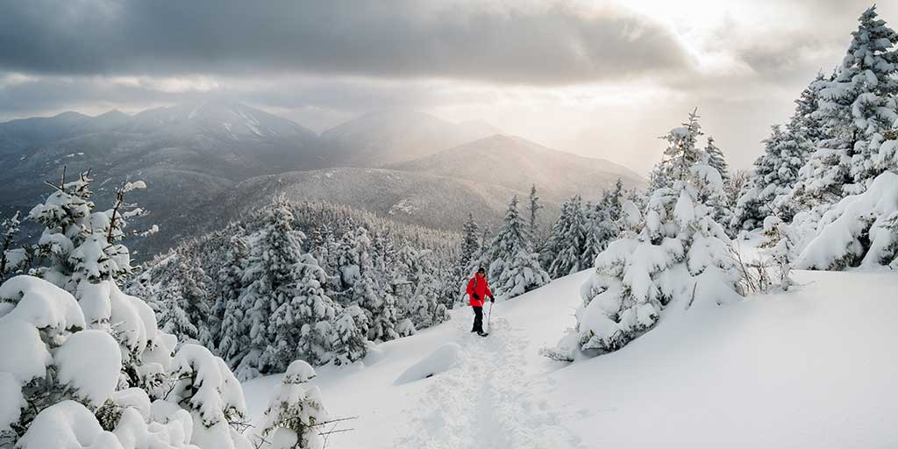
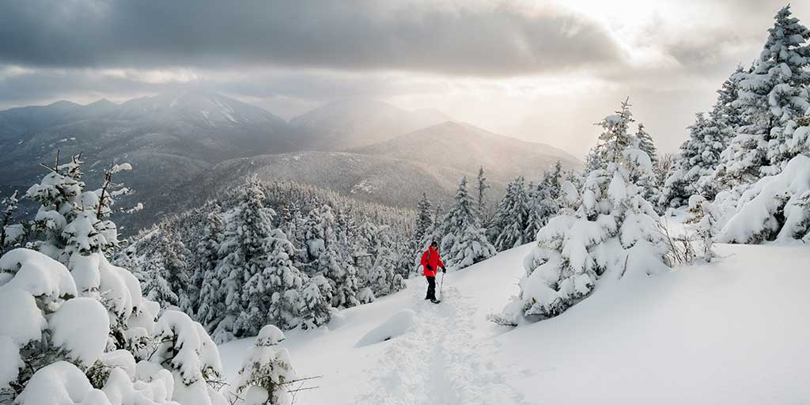

About
Located in Upstate New York, the Adirondack Park is best known for its expansive pristine forests, lakes, rivers, and outdoor recreation opportunities. Unlike a national park, the Adirondack Park has no entrance and no entry fee, as it not only contains public land, but private lands as well where people live year-round.
There are more than 200 lakes around the mountains, including Lake George, Lake Placid, and Lake Tear of the Clouds, which is the source of the Hudson River. The Adirondack Region is also home to hundreds of mountain summits, with some reaching heights of 5,000 feet or more.
Climate
The climate is strongly continental, with high humidity and precipitation year-round. The Adirondacks typically experience pleasantly warm, rainy weather in the summer (June–August), with temperatures in the range of 66–73 °F.
Summer evenings in the Adirondacks are chilly, with temperatures ranging on average between 45–54 °F.
Winters (December–March) are long, cold, snowy and harsh, with temperatures ranging from 18 to 23 °F. Winter nights are frigid, with temperatures between −2 and 4 °F.
Spring (April–May) and fall (September–November) are short transitional seasons.
Experiences
Activities for every season! More
Winter Camping
Cross-Country Skiing
Snowshoeing
Snowmobiling Trails
Backcountry Camping
Montain Biking
Hiking
Bird Watching
Fishing
Water Rafting
Paddling
Kayaking
Boat Tours
Scenic Drives
Breweries & Wineries
Dining options for any palate! More
Lone Bull Pancake & Steakhouse
Downtown Dinner
Gary's Dinner
Bistro LeRoux
Jeb's Restaurant
Latitude 44
Tamarack Cafe & Movie House
Skyline Ice Cream
The Good Bite Kitchen
Green Goddess' Scape Cafe
Pick your poison! More
Adirondak Pub & Brewery
Adirondack Winery
Mean Max Brew Works
 

Lodging
- Lodging options to suite all preferences!
- Adirondack Camping Village
- Adirondack Camping Village is one of Lake George's best kept secrets. Located only 3 minutes from Lake George and Lake George Village, yet set in the woods of the Adirondack Mountains. Large secluded private tent camping; RV sites with full hookups; camping cabins, and pet friendly, pets must be leashed. Amenities include heated pool, a wading pool, camp store, game room, playground, horseshoes, basketball, pickleball, volleyball, shuffleboard, hay rides, nightly movie, wi-fi, and coin laundromat.
- Whiteface Lodge Resort & Spa
- in Lake Placid is a modern luxury resort built in the Adirondack Great Camp style.
- Lake Pleasant Lodge
- Nestled on the shores of beautiful Lake Pleasant in the heart of the Village of Speculator lies one of the most amazing lakefront lodging opportunities in all of the Adirondacks. The Lake Pleasant Lodge (formerly known as the Lake Pleasant Inn) offers luxurious rooms and suites with spectacular and breathtaking views of the lake and mountains.
- White Pine Camp
- in Paul Smiths. Close enough to everything but yet far enough away to feel secluded! Includes amenities such as kayaking, pool room, ice fishing, tea room and old-fashioned bowling alley.